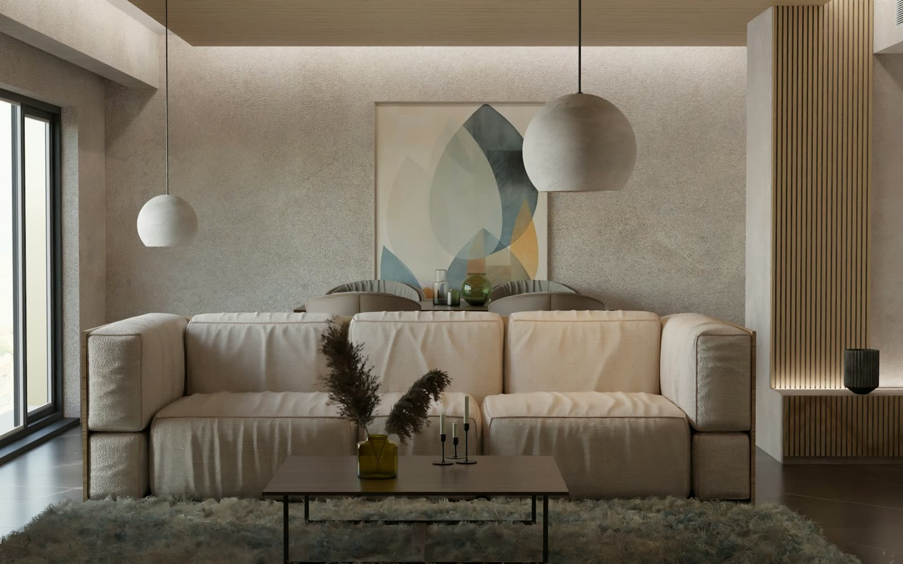
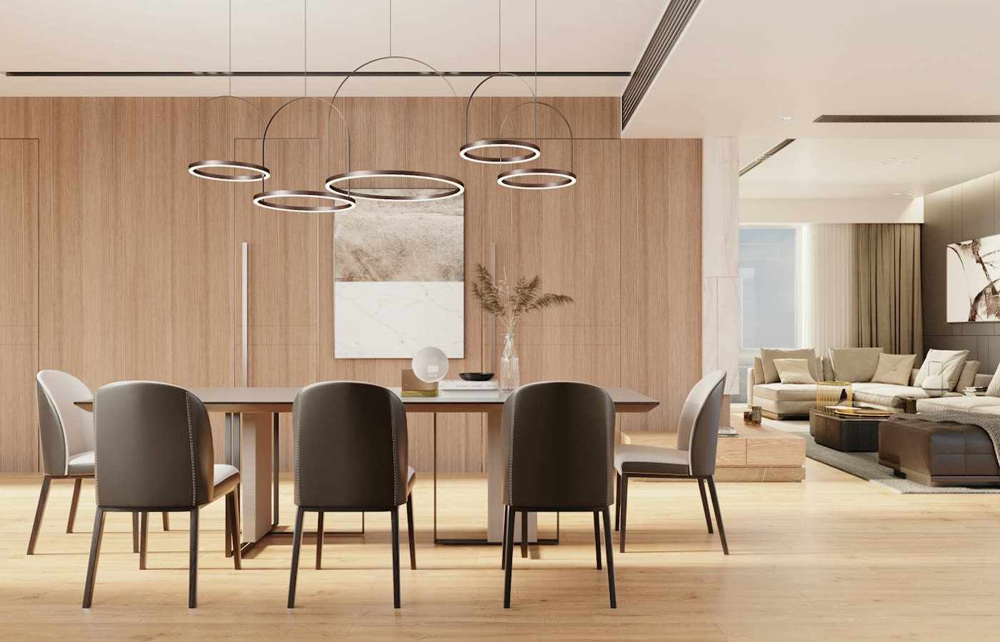
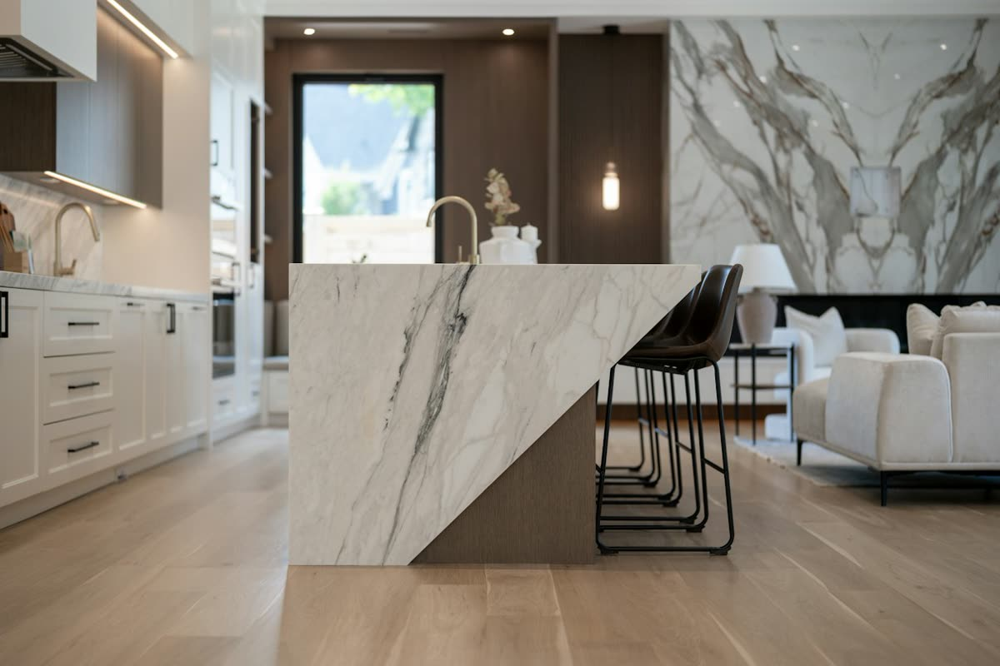
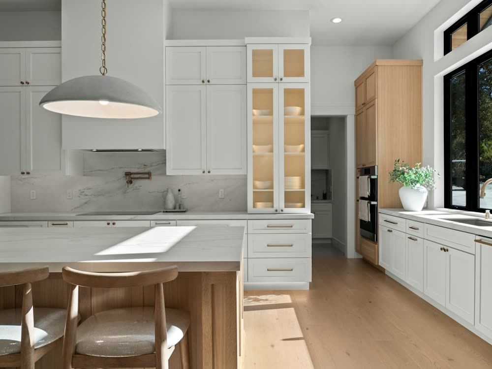
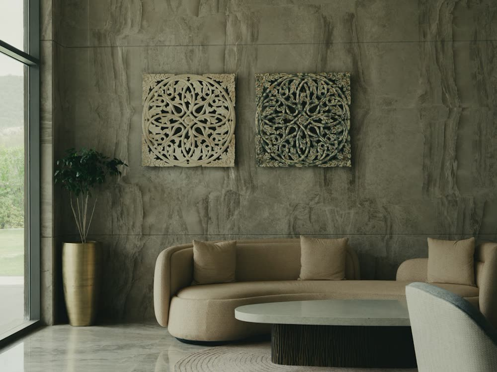
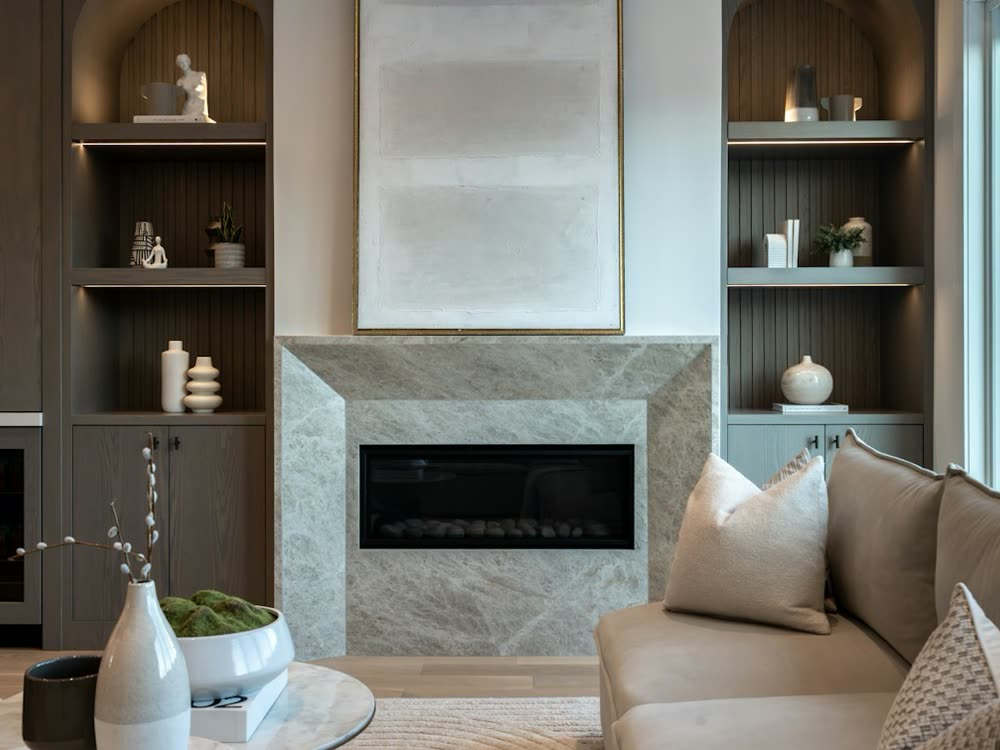
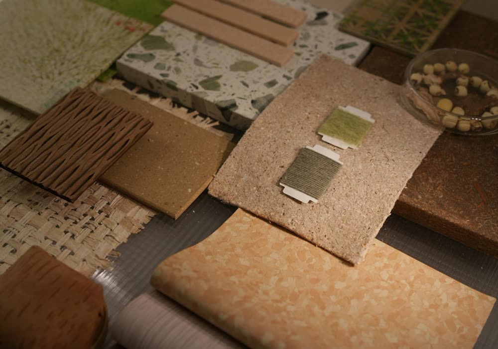

Home Remodeling
실측과 설계, 자재, 시공, 준공 청소까지 한 팀이 맡습니다. 공사하는 동안 날마다 사진으로 알려 드립니다.

거실 · 나무살 벽과 간접 조명
Plan and Finish
손잡이를 좌우로 끌어 보세요. 왼쪽은 선으로 본 설계, 오른쪽은 완성된 모습입니다.

사진 한 장에 선 효과를 입혀 보여 드리는 예시입니다
Spaces




사진은 예시입니다
Process

자재는 샘플을 직접 만져 보고 고릅니다
실측 상담
집에 가서 치수를 재고 사는 방식을 듣습니다
설계와 견적
도면과 자재 목록, 항목별 견적을 함께 드립니다
자재 고르기
바닥과 벽, 손잡이까지 샘플을 만져 보고 정합니다
시공
공정표를 나누고 날마다 사진으로 알립니다
점검과 입주
준공 청소를 마치고 함께 돌아보며 확인합니다
180종
직접 만져 보는 자재 샘플
24개월
시공한 곳의 무상 수리
5단계
공정표로 나누는 진행 상황
숫자는 예시입니다
실측 상담은 한 시간쯤 걸립니다 · 02-000-0000
실측 상담 예약